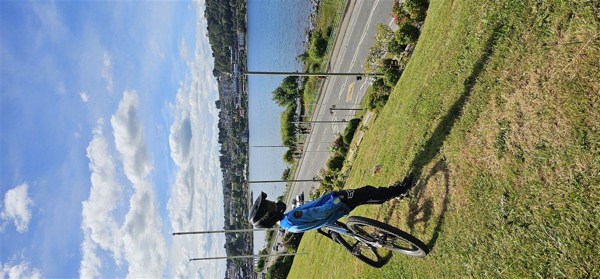
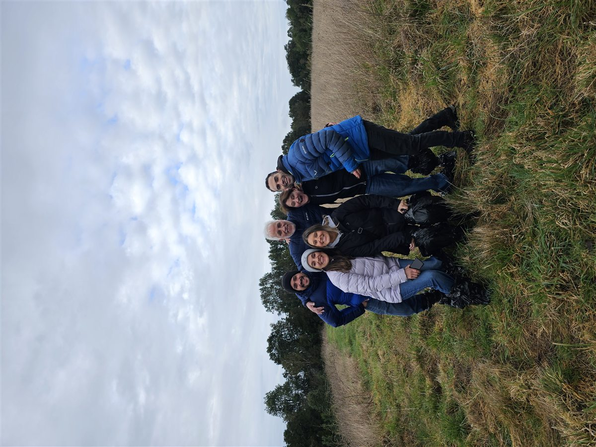
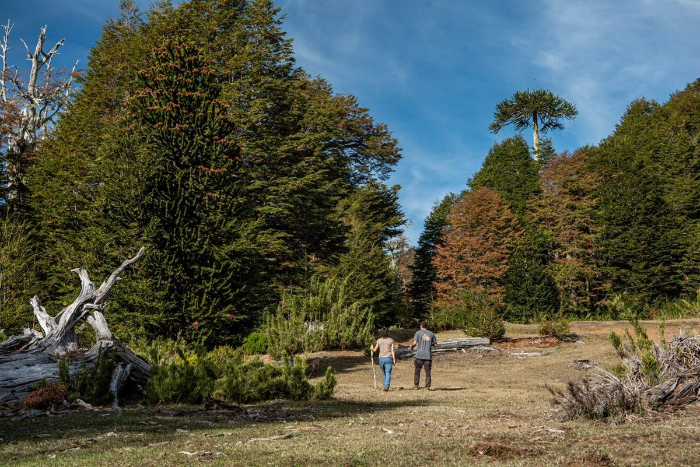
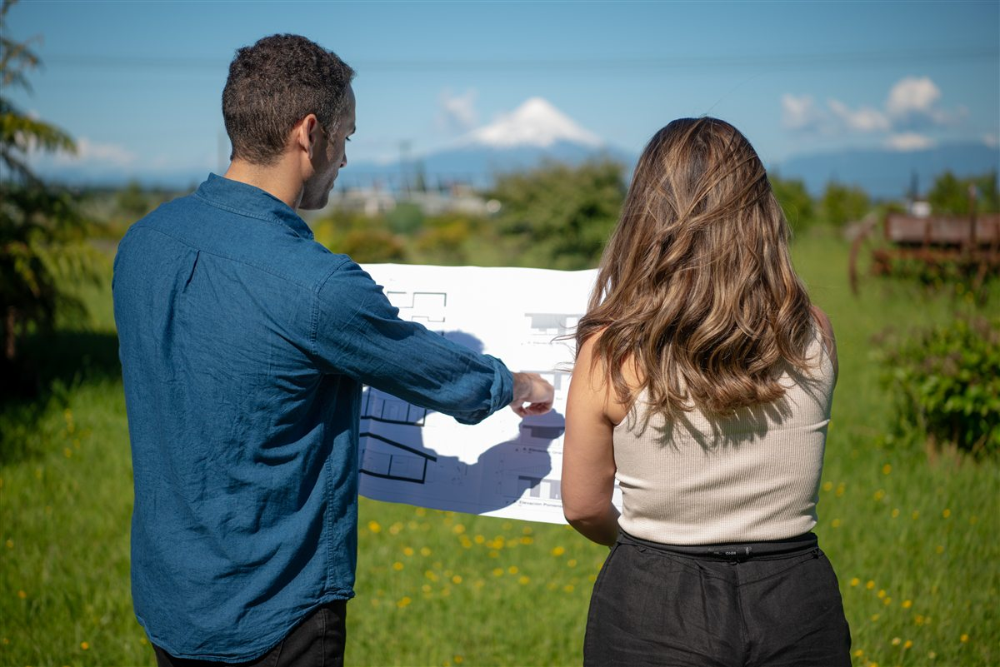
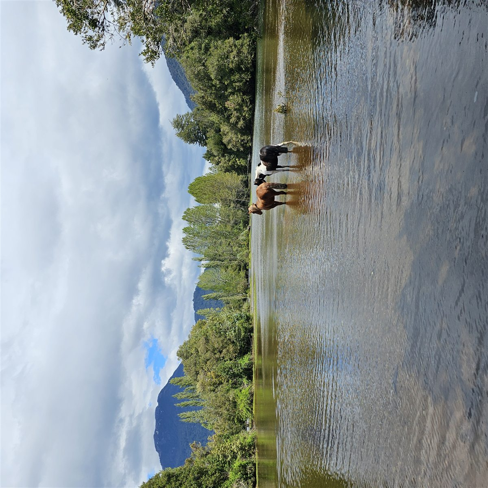
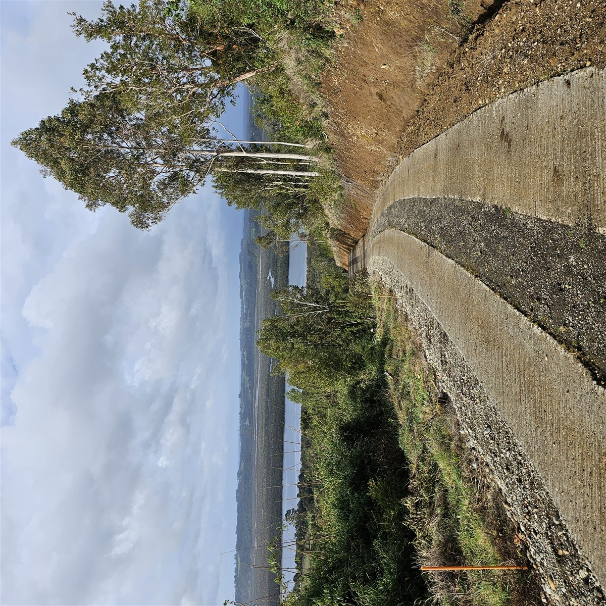
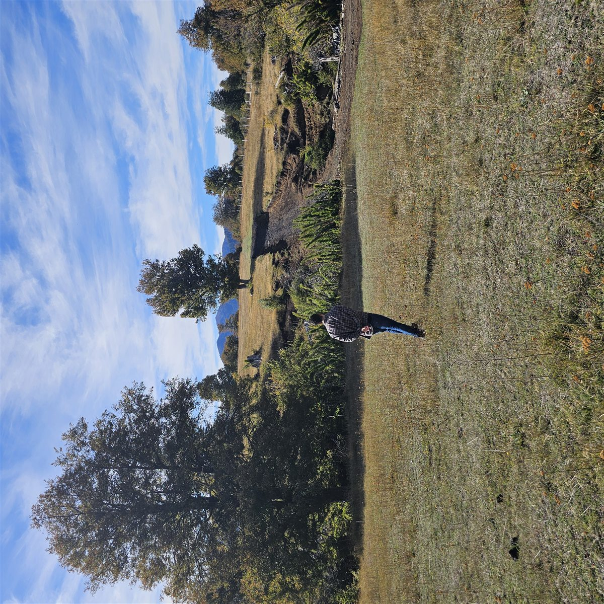
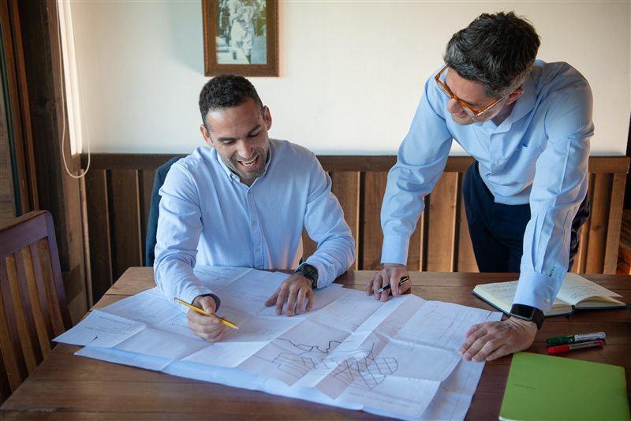

Estrategia Inmobiliaria · Sur de Chile
Un lugar para
tu historia.
El terreno correcto. Al precio correcto.
Con quien conoce el territorio y el mercado.
Buscas más que un aviso
Un proyecto de vida —no solo una compra
Llegaste pensando en tu casa, tu refugio en el sur o un negocio en el terreno. Pero entre portales y corredoras hay demasiado ruido y muy poco criterio local.
Land Advisors te ayuda a leer el lugar antes de comprometer tu dinero y tu sueño.

Primera o segunda vivienda
Imagina martes lluviosos y domingos soleados
No se trata solo de metros cuadrados. Es distancia real a la ciudad, calidad de vida, conectividad y un entorno donde tu familia quiera quedarse —hoy y en diez años.

Encontrar el terreno
Camina el lugar antes de firmar
Recorrer el contorno rural, sentir la orientación, ver cómo crece el entorno. Eso no aparece en un portal. Nosotros lo hacemos contigo —y filtramos lo que no encaja con tu objetivo.

Decidir con claridad
«Tengo un presupuesto de X millones, ¿dónde me conviene comprar?»
En el diagnóstico estratégico definimos zonas con factibilidad según tu presupuesto y te entregamos un informe con proyecciones por sector —sin promesas vacías.

El sur que buscas
Espacio, calma y un horizonte distinto
Cuenca del Llanquihue, Puerto Varas, Frutillar y el contorno rural donde la vida urbana y el territorio conviven cada día.

Transparencia
Trabajamos para ti —no para el vendedor
No recomendamos terrenos que no sean coherentes con tus objetivos. Preferimos decirte que un lugar no conviene antes que empujarte una compra que no creemos adecuada.
- Conocimiento local y de mercado
- Recomendación con criterio, no cantidad de avisos
- Tu cliente eres tú —el comprador

¿Ya tienes terreno?
Evaluar o estructurar un proyecto comercial
Si tu terreno puede ser cabañas, comercio o desarrollo, te ayudamos a leer vocación real, normativa y números —con una tesis clara antes de invertir.

Primer paso
Empieza con una conversación honesta
Agenda un diagnóstico estratégico: entendemos tu objetivo, presupuesto y plazo. Desde ahí definimos búsqueda, asesoría de compra o estudio de proyecto.
Cuéntanos tu sueño.
Te respondemos con criterio.
contacto@landadvisors.cl
WhatsApp · +56 9 7453 3265
www.landadvisors.cl
Walker Martínez 517, Puerto Varas · Los Lagos
Puerto Varas · Llanquihue · Frutillar · Cuenca Llanquihue
Resultados pasados no garantizan resultados futuros.